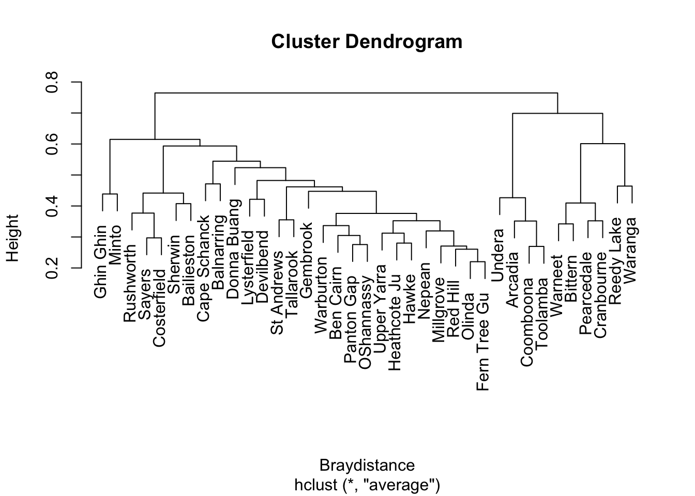

library(vegan)Tutorial 11: Clustering
ENVX2001 – Applied Statistical Methods
1 Dissimilarity Matrices and Clustering
We are going to analyse the bird assemblage data from the lecture.
1.1 Setup
Load the vegan package:
1.2 Load the data
Read the data:
macnally <- read.csv("data/macnally.csv", row.names = 1)
head(macnally, 1) HABITAT V1GST V2EYR V3GF V4BTH V5GWH V6WTTR V7WEHE V8WNHE V9SFW
Reedy Lake Mixed 3.4 0 0 0 0 0 0 11.9 0.4
V10WBSW V11CR V12LK V13RWB V14AUR V15STTH V16LR V17WPHE V18YTH V19ER
Reedy Lake 0 1.1 3.8 9.7 0 0 4.8 27.3 0 5.1
V20PCU V21ESP V22SCR V23RBFT V24BFCS V25WAG V26WWCH V27NHHE V28VS
Reedy Lake 0 0 0 0 0.6 1.9 0 0 0
V29CST V30BTR V31AMAG V32SCC V33RWH V34WSW V35STP V36YFHE V37WHIP
Reedy Lake 1.7 12.5 8.6 12.5 0.6 0 4.8 0 0
V38GAL V39FHE V40BRTH V41SPP V42SIL V43GCU V44MUSK V45MGLK V46BHHE
Reedy Lake 4.8 26.2 0 0 0 0 13.1 1.7 1.1
V47RFC V48YTBC V49LYRE V50CHE V51OWH V52TRM V53MB V54STHR V55LHE
Reedy Lake 0 0 0 0 0 15 0 0 0
V56FTC V57PINK V58OBO V59YR V60LFB V61SPW V62RBTR V63DWS V64BELL
Reedy Lake 0 0 0 0 2.9 0 0 0.4 0
V65LWB V66CBW V67GGC V68PIL V69SKF V70RSL V71PDOV V72CRP V73JW
Reedy Lake 0 0 0 0 1.9 6.7 0 0 0
V74BCHE V75RCR V76GBB V77RRP V78LLOR V79YTHE V80RF V81SHBC V82AZKF
Reedy Lake 0 0 0 4.8 0 0 0 0 0
V83SFC V84YRTH V85ROSE V86BCOO V87LFC V88WG V89PCOO V90WTG V91NMIN
Reedy Lake 0 0 0 0 0 0 1.9 0 0.2
V92NFB V93DB V94RBEE V95HBC V96DF V97PCL V98FLAME V99WWT V100WBWS
Reedy Lake 0 0 0 0 0 9.1 0 0 0
V101LCOR V102KING
Reedy Lake 0 01.3 Calculate Bray-Curtis Dissimilarity
Calculate the Bray-Curtis dissimilarity:
Braydistance <- vegdist(macnally[, 3:102])1.4 Hierarchical Clustering
Apply hierarchical clustering using the UPGMA method (“average”):
hc <- hclust(Braydistance, method = "average")1.5 Plot the Dendrogram
Plot the dendrogram:
plot(hc)
Let’s add some labels, and look at the potential number of clusters:
plot(hc, las = 1,
main = "Cluster diagram of Bird Assemblages",
xlab = "Site",
ylab = "Bray-Curtis Dissimilarity")
rect.hclust(hc, 2, border = "red")
rect.hclust(hc, 5, border = "darkgreen")
The rectangles show potential groupings at different levels of the dendrogram:
- Red rectangles: 2 clusters
- Green rectangles: 5 clusters
The choice of how many clusters to use depends on your research question and the level of dissimilarity that is meaningful for your study.